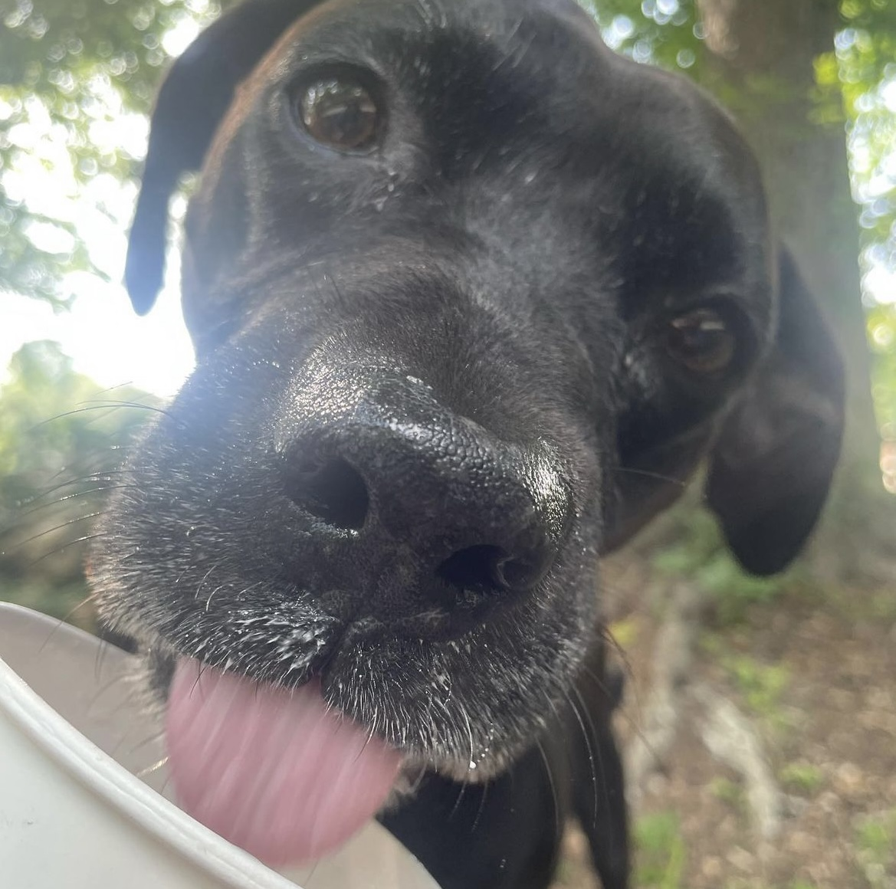
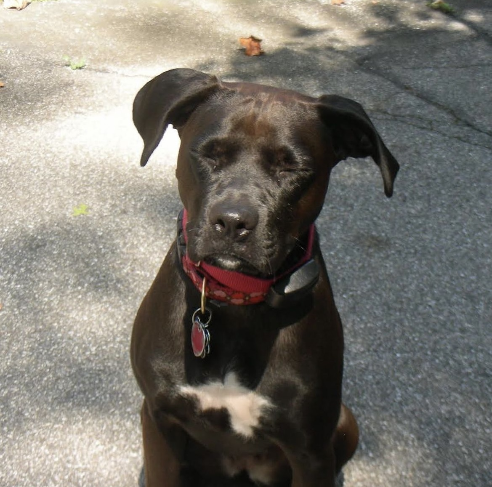
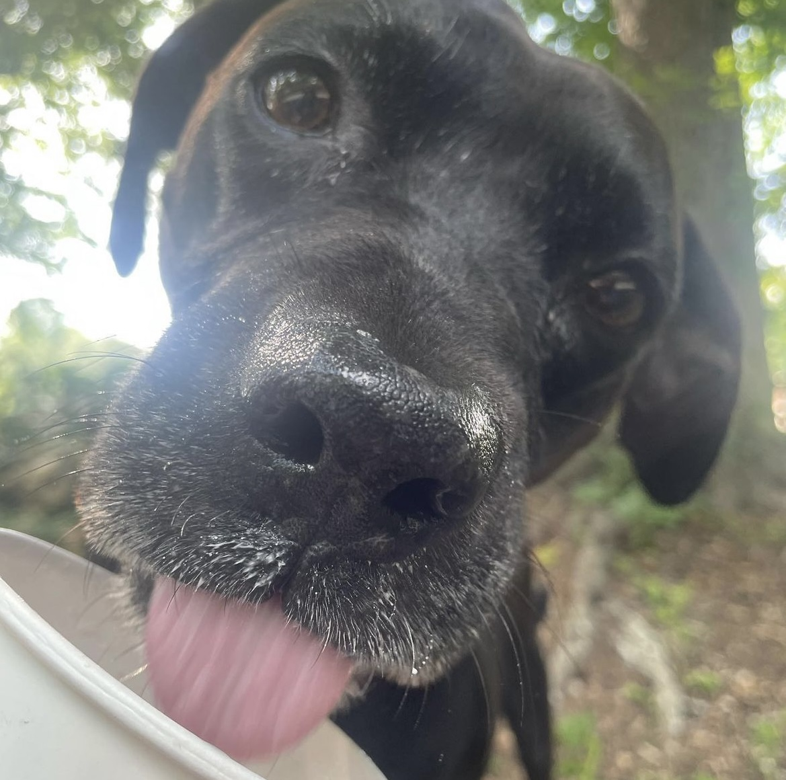
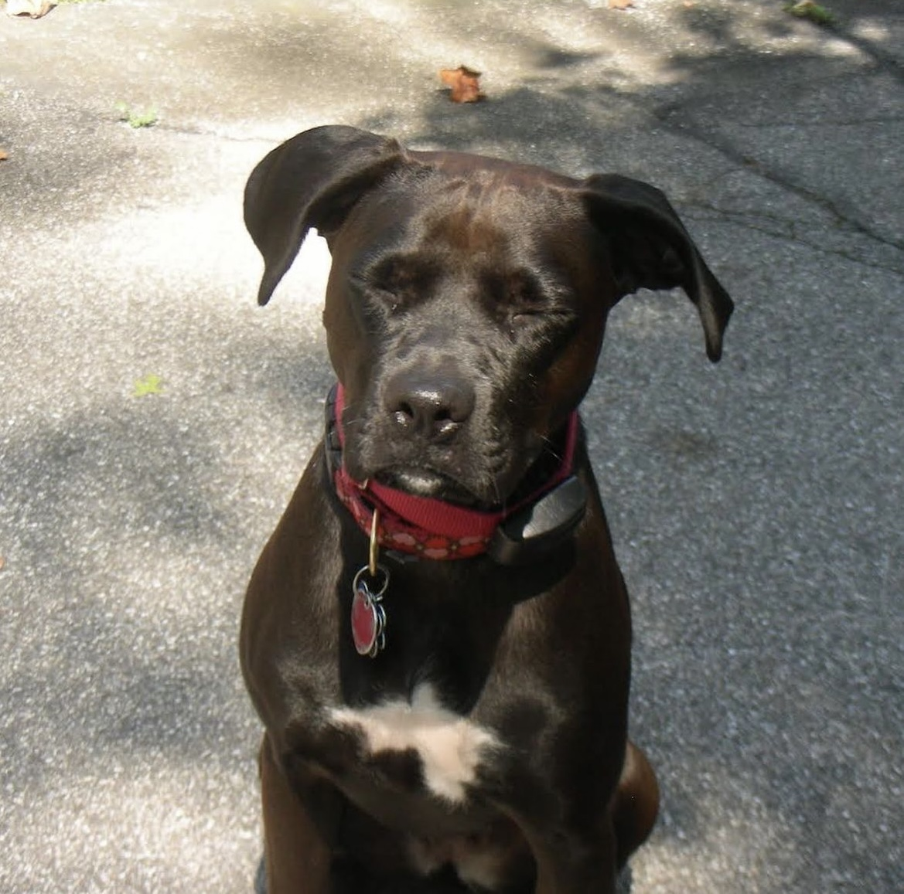

Pets
Moxie
Moxie was a black Labrador and Pitbull mix. She was very stylish (as you cna see in the images). She spent most of her days talking walks, silently watching squirrels through the window, or taking long naps when she wasn't eating. Although Moxie was not my dog, she was my bestfriend's dog and I was responsble for caring for her sometimes and built quite a close bond with her.
You may have noticed I used past tense when refering to Moxie in the previous text, that is because this past summer of 2023 Moxie sadly passed away due to fluid build up in her chest. Fair to say I cried like a baby at the vets and the doctor was a bit sonfused as to why a friend of the grieving family was crying more than them. :(
Photo Gallery
 



Moxie's Favs
- Lobster toys of all kinds
- sneezing
- napping
Loki
Loki is a red husky with bright blue eyes who is still quite young despite his size. He lives in Georgia even though huskies are known to live in cold places but he seems to love it there.
Loki was named after the Norse mythology god and he is the dog of one of my good friends here at michigan. She got him around christmas last year whe he was a little puppy but a year later hes grown to be so big.
Photo Gallery
Loki's Favs
- chin scratches
- cameras
- lying on his back
Spice
Spice is a small reddish-light brown pomeranian who lives in the big city of DC. She loves to go on walks (for onky smll periods of time) and running around big fields.
Spice is also my good friedns dog and I've loved seeing her when I go back home. Spice lokes running arouns the house but because shes so small and slips alot she can only lounge around on the parts of the floor that have small blankets so she doesn't slide around.
Photo Gallery
Spice's Favs
- sleeping next to the doorway
- attention form random people
- her donut shaped toy
Remi
Remi is a young gray cat with blue eyes (that are now switching to green). She looks like she could possibly be a mix of a russian blue cat and something else.
Remi was recently adopted by my friend's family, She is a young cat who is very energetic and loves attention from her owners. Shes alo been known to be quite photogenic.
Photo Gallery
Remi's Favs
- crawling under beds
- sitting inside cardboard boxes
- climbing things
Msgana
Msgana is Bemnet's litle sister. She is 15 years old and currently a freshman is highschool. Msgana is technically not an animal but she has to be cared for like a pet by Bemnet, so were playing tribute to her in this website.
Msgana enjoys running and playing video games in her free time. Shes really into art and painting like her sister so she makes a lot of art for her classes and for fun.
Photo Gallery


Msgana's Favs
- Stealing her sister's clothes
- playing Roblox and yelling at her laptop
- dino chicken nuggets